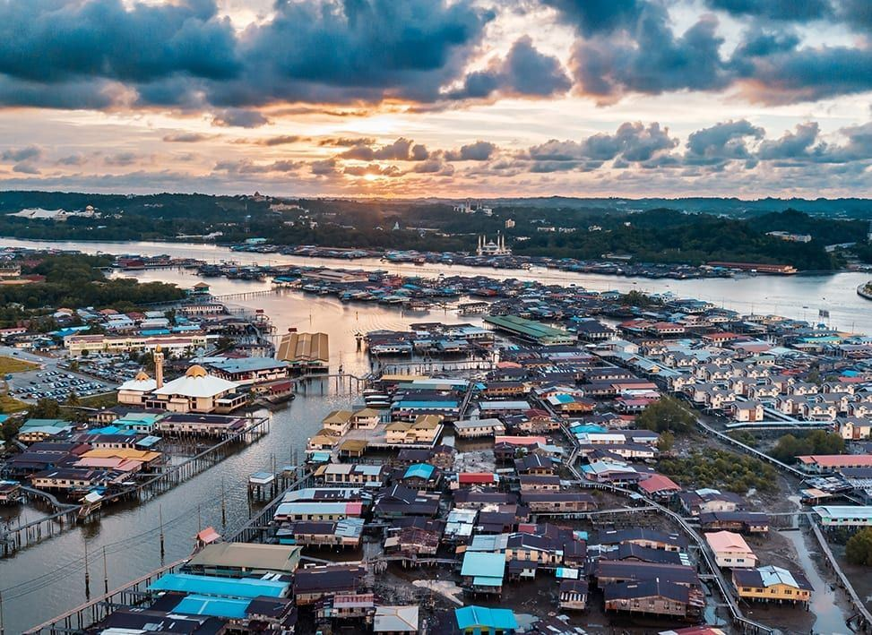

Kampong Ayer
Often called the Water Village, Kampong Ayer is a historic settlement built on stilts above the Brunei River. People have lived here for generations, and visitors can explore the village by water taxi.
Story: People have lived here for centuries. It was once the centre of Brunei's trade and daily life.